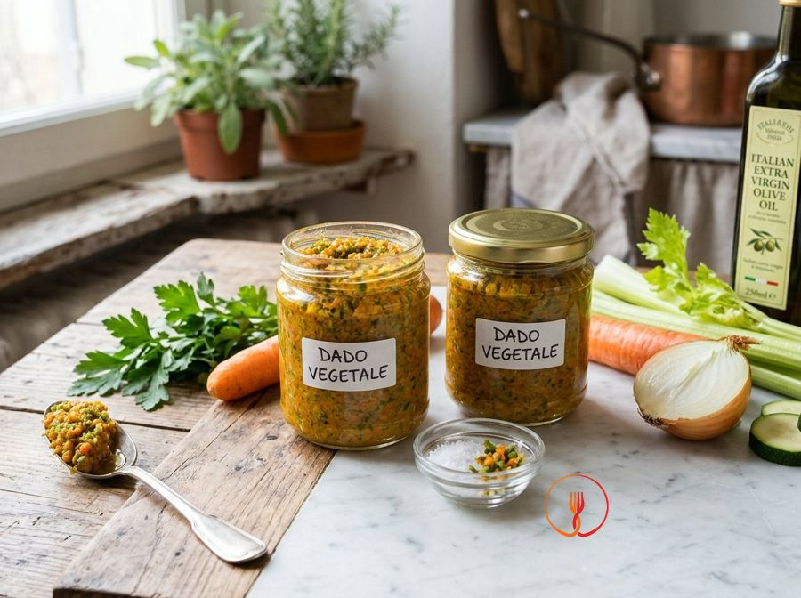

Vegetable bouillon paste
Ingredients
- carrots200 gr
- celery150 gr
- onion100 gr
- zucchini100 gr
- parsley50 gr
- fine salt150 gr
- extra virgin olive oil20 ml
Allergens
Celery
Method
- Wash all the vegetables, remove the non-edible parts and cut them into small cubes.
- Transfer them to a large saucepan and add the salt.
- Stir and let rest for about 10 minutes, allowing the vegetables to release some of their water.
- Add the oil and cook over medium-low heat for about 45–60 minutes, stirring frequently.
- When the liquid has evaporated and the vegetables are soft, blend everything with a mixer until you get a smooth paste.
- Put back on the heat for a few minutes, stirring, if the mixture needs further concentration.
- Allow to cool quickly and transfer to clean containers, preferably in small portions.
- Store in the refrigerator for a short period or freeze in portions. Do not consider it a sterilized product or shelf-stable at room temperature.
Chef's tips
Tips, mistakes and alternatives:
- The amount of salt is high because it contributes to preservation, but the product is not automatically safe at room temperature.
- You can add tomatoes, mushrooms or aromatic herbs.
- For a less salty product, reduce the salt, but store exclusively in the freezer.
- One teaspoon can flavor about 500 ml of water, adjusting the salt of the preparation.
Nutrition facts (estimate)
| Per serving (192 g) | Per 100 g | |
|---|---|---|
| Energy | 360 kJ / 86 kcal | 188 kJ / 45 kcal |
| Protein | 1.7 g | 0.9 g |
| Carbohydrates | 9.8 g | 5.1 g |
| of which sugars | 4.8 g | 2.5 g |
| Fat | 4.9 g | 2.5 g |
| of which saturates | 0.8 g | 0.4 g |
| Fibre | 3.1 g | 1.6 g |
| Salt | 38 g | 20 g |
AI estimates based on average CREA / USDA data: indicative only, not a substitute for medical or dietitian advice.
Open the recipe in the app for the shopping list, ingredient sheets and nearby shops.